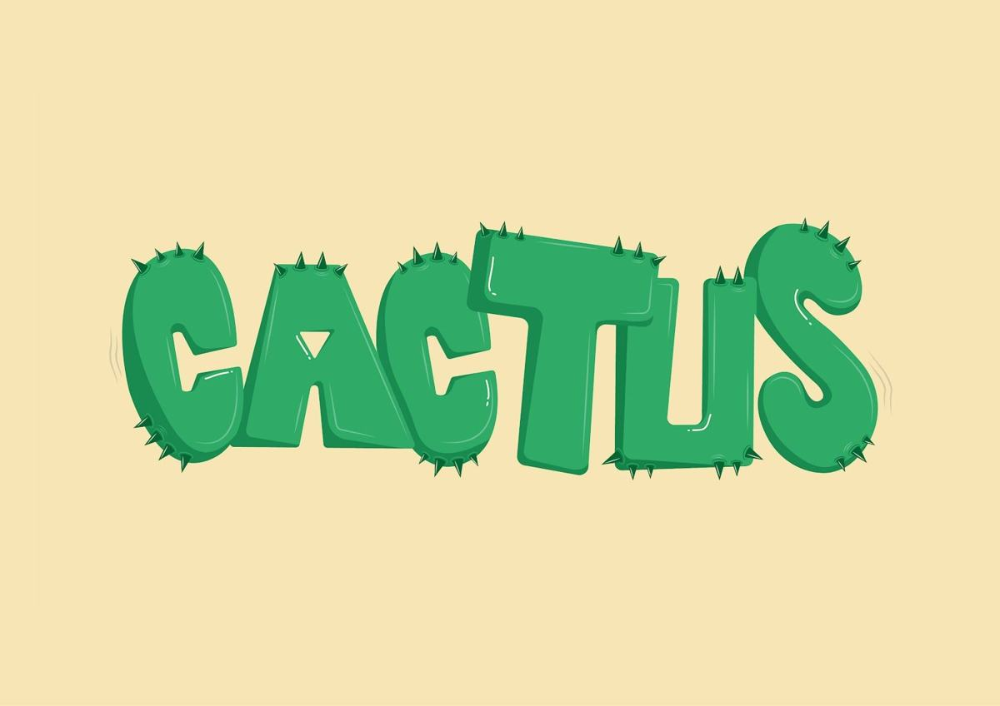
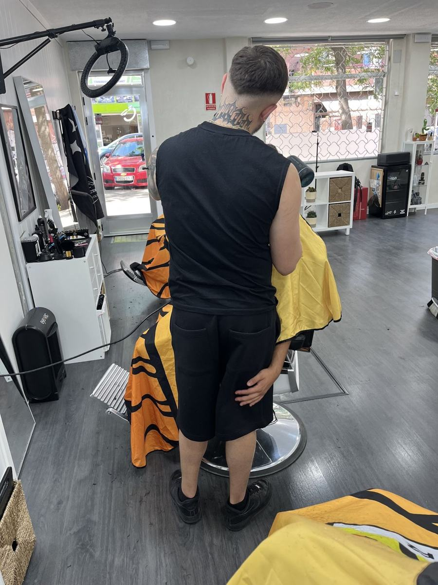
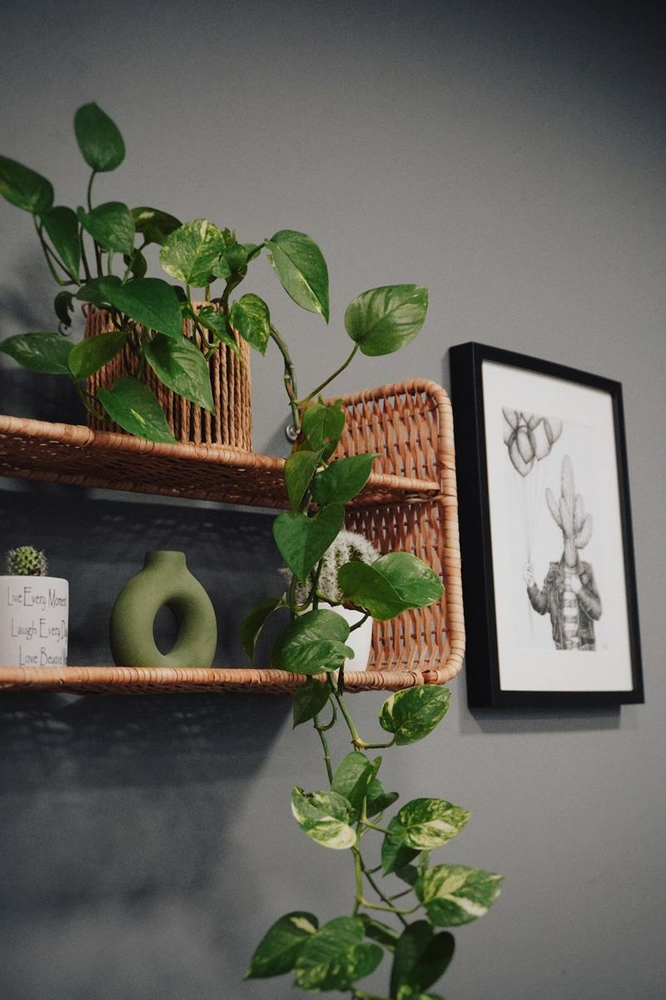
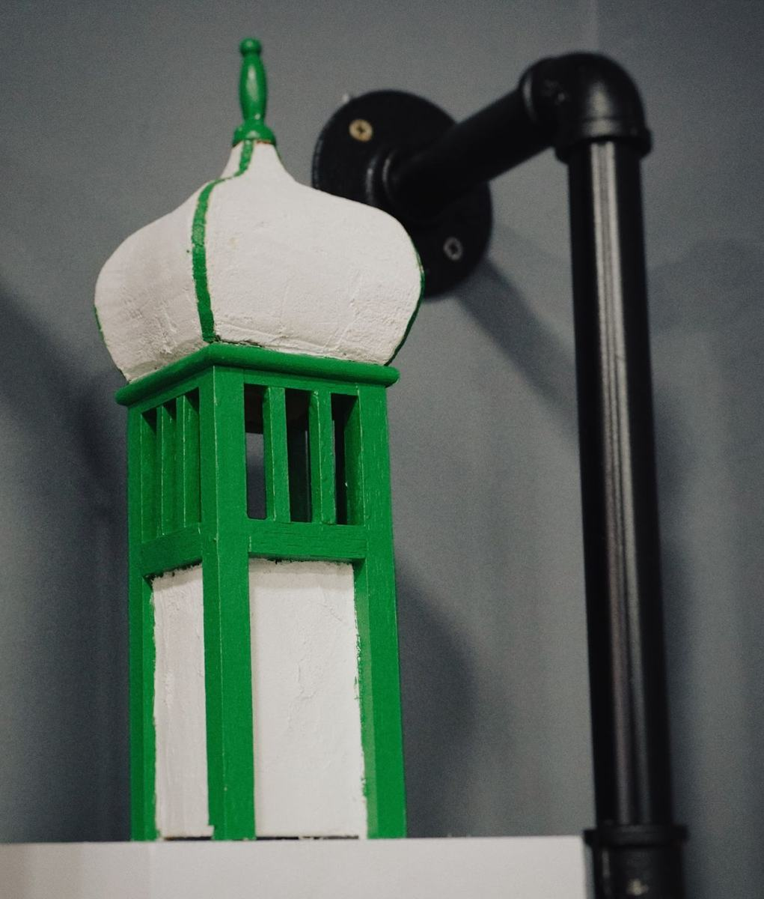
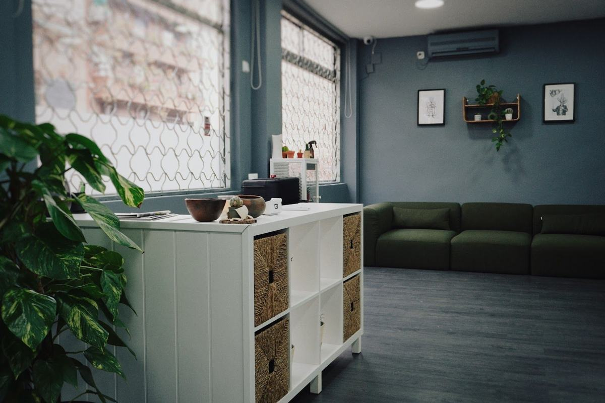
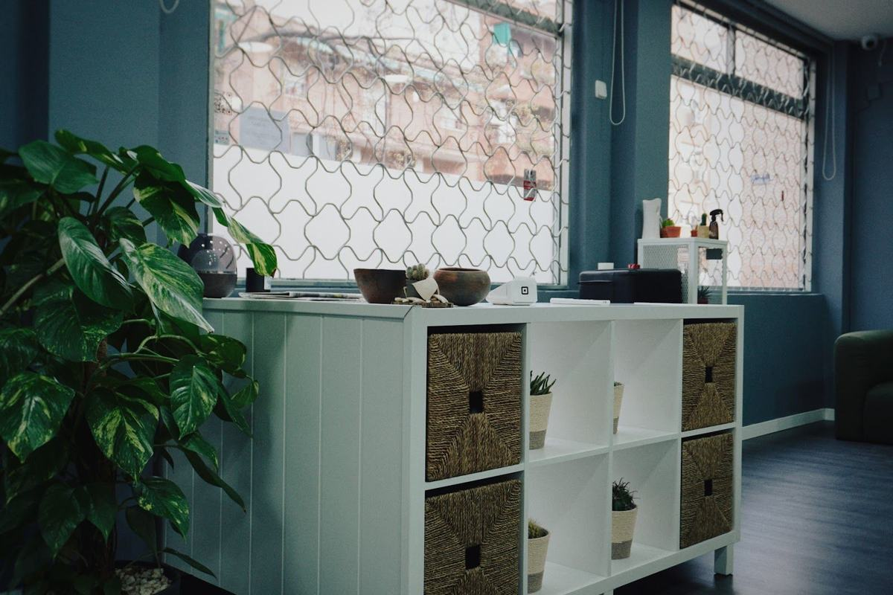

Pedir cita por WhatsAppBarbería con alma verde en Carabanchel Alto. Plantas, buena música y cortes que no fallan.
Pedir cita por WhatsApp
manos a la obra
nuestro rincón
el poste
Un local tranquilo, lleno de plantas, en la calle Alfredo Aleix, 5. Aquí nadie va con prisa.
Tijera o máquina, lavado y peinado
El combo completo, con perfilado a navaja
Recorte, forma y perfilado
Navaja y toalla caliente
Skin fade, low, mid o high
Hasta 12 años
| Lunes | 9:00–14:00, 15:00–20:00 |
|---|---|
| Martes | 9:00–14:00, 15:00–20:00 |
| Miércoles | 9:00–14:00, 15:00–20:00 |
| Jueves | 9:00–14:00, 15:00–20:00 |
| Viernes | 9:00–14:00, 15:00–20:00 |
| Sábado | 9:00–15:00 |
| Domingo | Cerrado |
